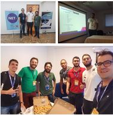
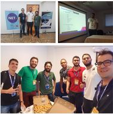

RoadSec
Realizado no Tribunal de Contas do Estado da Paraíba durante o RoadSec João Pessoa 2018.
 24/02
Realizado no Tribunal de Contas do Estado da Paraíba durante o RoadSec João Pessoa 2018.
 24/02